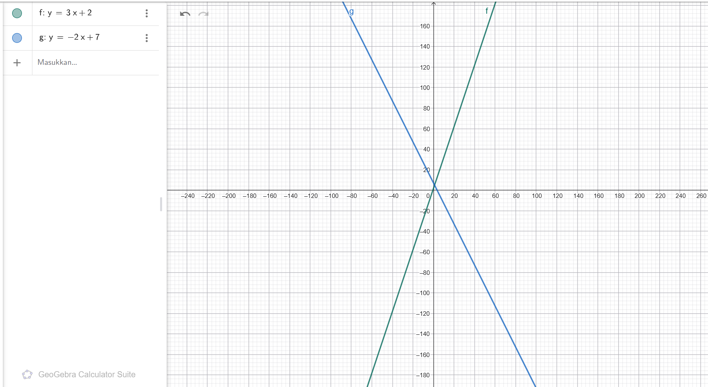
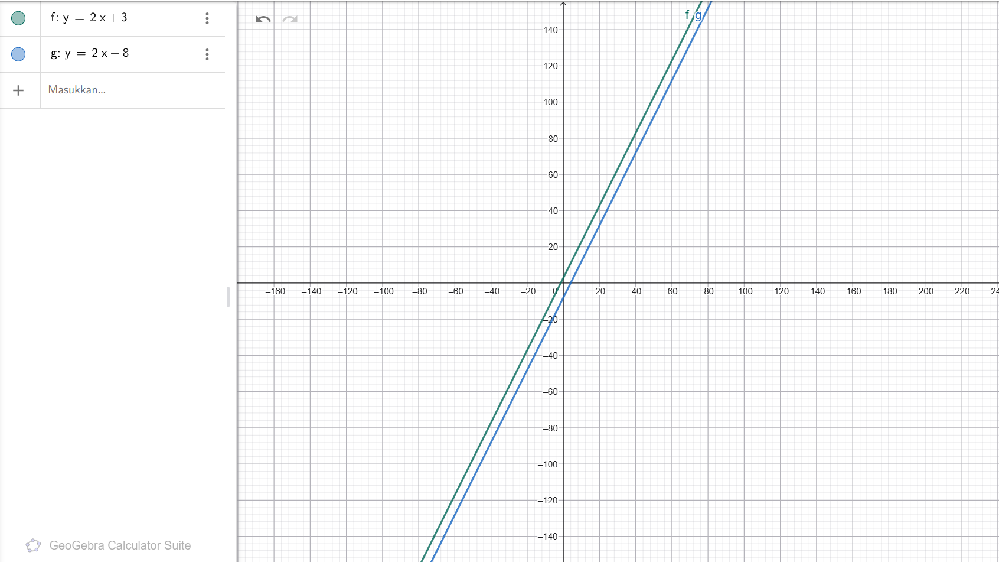

Apa itu Persamaan Linear?
Ringkasan Materi:
- Memahami definisi dasar dari persamaan linear dan komponen pembentuknya.
- Menganalisis sifat dua garis yang saling berpotongan (memiliki kemiringan berbeda).
- Menganalisis sifat dua garis yang saling sejajar (memiliki kemiringan sama namun konstanta berbeda).
- Memvisualisasikan persamaan menggunakan grafik koordinat Cartesius.
1. Pengertian Persamaan Linear
Persamaan linear adalah persamaan aljabar yang variabelnya memiliki pangkat tertinggi satu, dan jika digambarkan dalam grafik koordinat, hasilnya akan berbentuk garis lurus.
Persamaan ini menghubungkan satu atau lebih variabel independen untuk membentuk sebuah fungsi linear. Umumnya, struktur persamaan ini terdiri dari komponen-komponen berikut:
- Variabel: Lambang yang nilainya bisa berubah (seperti $x$ dan $y$).
- Koefisien: Angka pengali yang berada tepat di depan variabel.
- Konstanta: Nilai tetap berbentuk angka murni tanpa diikuti oleh variabel.
2. Contoh 1: Garis Berpotongan
Agar dua garis pada koordinat Cartesius saling berpotongan di satu titik, syarat utamanya adalah nilai kemiringan garis (gradien atau koefisien di depan variabel $x$) harus berbeda. Berikut adalah contoh persamaannya:
Karena kemiringan garis pertama adalah $3$ dan garis kedua adalah $-2$, kedua garis ini pasti akan saling berpotongan jika digambarkan, yaitu tepat pada titik koordinat $(1, 5)$.

3. Contoh 2: Garis Lurus Sejajar
Agar dua garis posisinya sejajar (artinya searah dan tidak akan pernah berpotongan meski diperpanjang sampai tak terhingga), syaratnya adalah nilai kemiringan garis (gradien) harus sama, tetapi angka konstantanya harus berbeda.
Kedua persamaan di atas memiliki nilai kemiringan yang sama yaitu $2$. Namun, karena memotong sumbu-$y$ di titik yang berbeda ($+3$ dan $-2$), garis tersebut akan membentang berdampingan secara konsisten.
